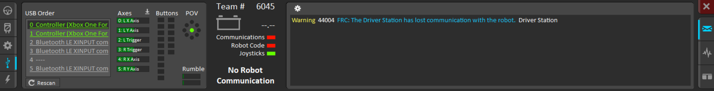

The purpose of this website is to make it easier to find programming-related things that are used or made by FRC 6045.
First, open FRC Driver Station and navigate to the USB Devices Tab.

Any controllers that are connected will have green text. In the picture, they both show "Controller (Xbox One For".
When a button is pressed on a controller, the associated controller name will be highlighted green.
Drag the controller names to reorder them.
Controllers must be connected by USB for use at competitions; wireless connections are not allowed.
For FRC 6045, the black driver controller should be in the "0" position and the white operator controller should be in the "1" position.